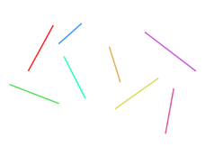
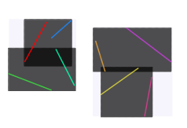

# Raytracing In 2D
## Background
During Covid times, me and a group of friends got very into using virtual tabletops, and while
playing them, a certain friend who was DMing really wanted to boost the graphics quality, which scaled pretty horribly, especially on older hardware.
One of the biggest bottlenecks seemed to be around how many blockers they would put in their scene, around 10-20 seemed to be ok, but when they started getting
into full level designer mode and adding like 200+ it would be basically unplayable.
I can't say I'm sure exactly how this particular VTT implemented this, but I assume it involved a linear loop, line intersecting against every blocker, which
in the world of raytracing is a big no-no.
For the specific case of vision blocking, raytracing doesn't seem like something you'd want to do full-frame, every frame and I actually already
have a solution which involves projecting and incrementing a stencil buffer (in a similar sort of vibe to shadow volumes),
which seemed to work rather nicely and I may post about at some point.
And likewise for lights, using a circular shadowmap, offline polygon generation or simply baking lighting data seems like a more reasonable approach (also may
cover some implementations for those I've been playing with).
Regardless, I thought it would be interesting to implement raytracing on the GPU (targeting web broswers and not assuming good hardware) from scratch.
## Building The BVH
Arguably the most important part about accelerating raytracing is the BVH, how this is structured will basically
define how you go about discarding batches of lines from being processed any further.
I settled on using a b-tree based approach, where each node is made of 48 bytes (3 x float4) is stored in a linear buffer and has the following layout:
```c
struct BvhNodeV1
{
uint leftType;
uint leftId;
uint rightType;
uint rightId;
float4 leftData;
float4 rightData;
};
```
Where:
* `type` is 0 if it's a **node** or 1 if it's a **line**.
* `id` is buffer index of a **node** or `lineId` of a **line**.
* `data` is the bbox of the **node** or line parameters of a **line**.
You may think using an entire 128bits for both the types and ids may seem wasteful (do we really need 16 bytes for two bools and a two offsets).
And you would be right, however by aligning the result into a float4, it means actually fetching the data is reasonably GPU friendly.
```glsl
uniform sampler1D bvh;
...
vec4 v0 = texelFetch(bvh, offset); // types and ids (asuint / floatBitsToInt)
vec4 v1 = texelFetch(bvh, offset + 1); // left data
vec4 v2 = texelFetch(bvh, offset + 2); // right data
```
To construct the BVH we repeatedly subdivide the number of lines in half, this is done by:
* Calculating the box that contains the **center** point each line.
* Partial soting `centerX` or `centerY` depending on which axis was longer in the previously calculated box, using [size/2] as the mid point.
* Partitioning the left to be `[0, size/2)` and right to be `[size/2, size)`.
 Input Lines
 First Level
 Second Level
The BVH generation code was written in C++ (link to source at the bottom) and even when targetting WASM, should be rather quick, you can run a little benchmark here (`n log(n)` time):
So much so, an interesting idea would be to offline calculate a BVH for static elements and per frame generate
another BVH for dynamic elements and simply merge their root nodes together (perhaps for another time).
## Shader Traversal
To get around the problem of not having arbitary recursion in shaders, a stack based approach is used instead,
as a (very) simplified psuedo-code (python) outline:
```python
def find_closest_hit(ro, rd):
closest_hit = float("inf")
stack_offsets = fixed_size_array(MAX_STACK_SIZE)
stack_offsets.push(0) # Root node
while stack_offsets:
offset = stack_offsets.pop()
node_data = fetch_bvh_data(offset)
left, right = split_left_right(node_data)
to_add = []
for side in (left, right):
if side.is_line():
hit_dist = ray_intersection_dist(ro, rd, side.data)
if hit_dist < closest_hit:
closest_hit = hit_dist
else:
hit_dist = ray_intersction_bbox_dist(ro, rd, side.data):
# Only push the node for evaluation if it may result in
# a closer intersection
if hit_dist < closest_hit:
to_add_entry = {"dist": hit_dist, "offset": data.idx}
# and keep the closest local intersection at the back,
# so it's evaluated first.
if to_add.empty() or to_add[0]["dist"] > hist_dist:
to_add.append(to_add_entry)
else:
to_add.insert(0, to_add_entry)
for to_add_entry in to_add:
stack_offsets.push(to_add_entry["offset"])
return closest_hit
```
And here is a little demo of it in action, for reference, on a Intel UHD Graphics 630, it takes ~9ms to do
a full 1920x1080 pass, so not something you'd want to use directly for lighting.
Resolution
Number of lines to use
BVH Overlay
Ray Vis Type
Worth nothing, that it's incredibly simple to generate a distance field from a BVH (`findNearestDistanceBvhV1`), switching to a SDF model can reduce
a full frame evaluation down from 9ms to 3ms at the cost.
Here are all the relevant source code files:
* BVH generation (C++): generate_bvh_v1.cpp
* Ray traversal (GLSL): v1_tracing.glsli
* Visualisers (GLSL): v1_tracing_test.frag
* Line / BBOX overlays (GLSL): v1_draw_bvh.vert
---
Slighly off tangent, but I ended up putting together a subset of the C std and C++ stl while making this.